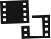
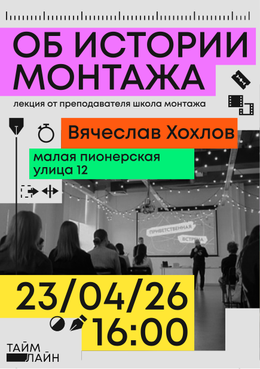
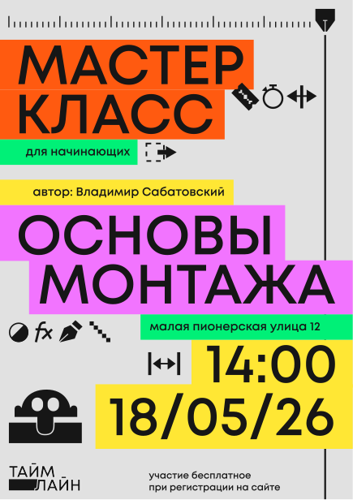
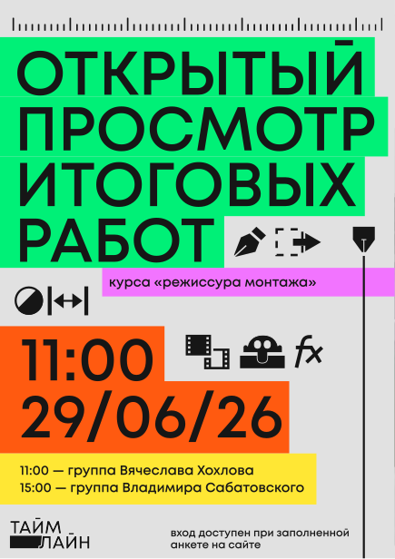
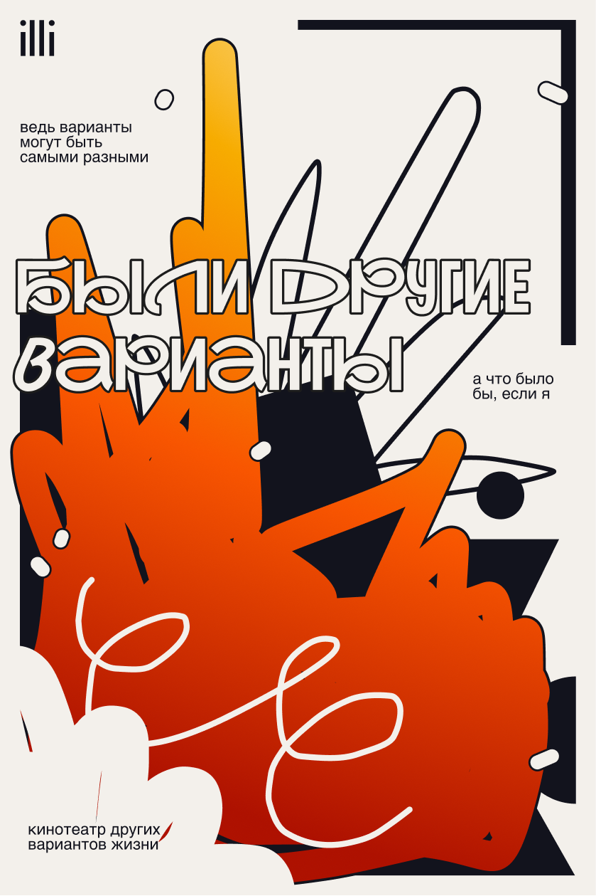
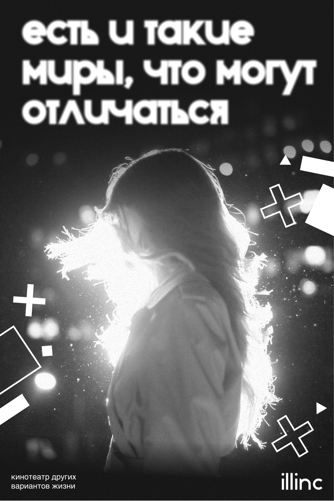
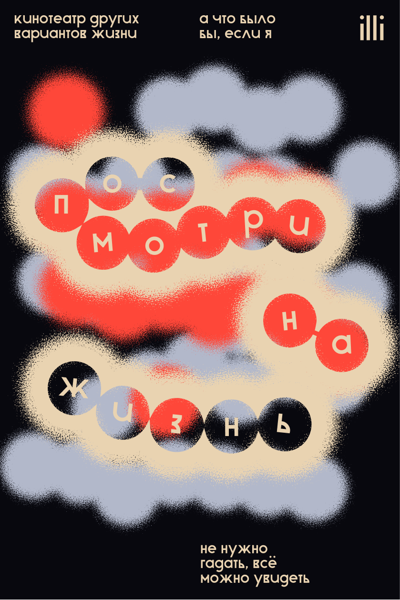
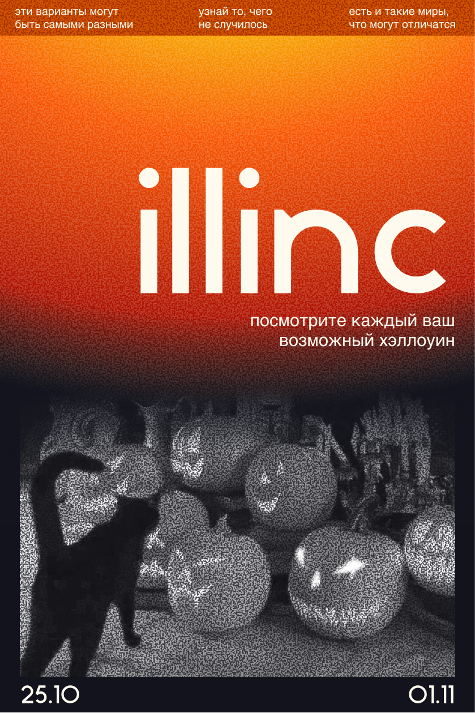
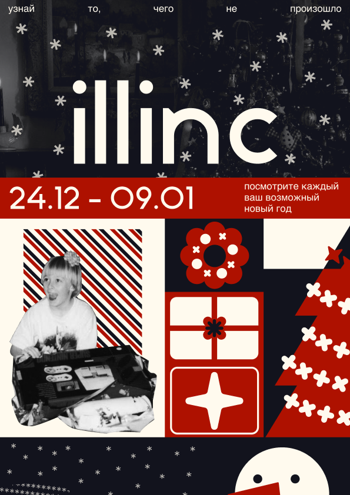

СОБЫТИЕ СОБЫТИЕ СОБЫТИЕ СОБЫТИЕ СОБЫТИЕ СОБЫТИЕ

Лекция «Об истории монтажа» погрузит вас
в эволюцию
видеомонтажа — от ручного склеивания
киноплёнки до современных
цифровых технологий.
Вы узнаете о ключевых этапах развития профессии,
знаковых
фильмах и новаторских приёмах. Лекция
поможет понять, как
монтаж превратился
из технического процесса в мощный художественный
инструмент,
формирующий восприятие зрителя.
Дата: 23.04.2026
Спикер: Вячеслав Хохлов
СОБЫТИЕ СОБЫТИЕ СОБЫТИЕ СОБЫТИЕ СОБЫТИЕ СОБЫТИЕ

Мастер‑класс «Основы монтажа» поможет освоить
базовые приёмы
видеомонтажа: участники
познакомятся с интерфейсом Adobe
Premiere Pro,
научатся работать с кадрами, добавлять
переходы
и звук, а в завершение смонтируют свой первый
короткий
ролик под руководством преподавателя.
Дата: 18.05.2026
Автор: Владимир Сабатовский
СОБЫТИЕ СОБЫТИЕ СОБЫТИЕ СОБЫТИЕ СОБЫТИЕ СОБЫТИЕ

В уютном зале собираются студенты, наставники
и гости, чтобы
увидеть плоды усердного труда.
На экране демонстрируют учебные
фильмы,
созданные руками выпускников. После каждого
ролика звучит
разбор: отмечают сильные стороны
и деликатно указывают на зоны
роста. Для студентов
это не только оценка навыков, но и ценный
диалог
с профессионалами индустрии.
Дата: 29.06.2026
СОБЫТИЕ СОБЫТИЕ СОБЫТИЕ СОБЫТИЕ СОБЫТИЕ СОБЫТИЕ

На лекции вы узнаете, как с помощью монтажа можно
менять
настроение сцены, управлять ритмом
повествования и подчёркивать
драматургию.
Мы рассмотрим основные стилистические
приёмы — от
классического «невидимого» монтажа
до смелых экспериментальных
решений.
Вы познакомитесь с тем, как разные стили монтажа
используются в кино, рекламе и музыкальных клипах.
Дата: 30.07.2026
Спикер: Валерия Чайкина
СОБЫТИЕ СОБЫТИЕ СОБЫТИЕ СОБЫТИЕ СОБЫТИЕ СОБЫТИЕ

Вы узнаете, как превратить смутный замысел в чёткий
план работы
и какие инструменты помогут донести
идею до зрителя с помощью
монтажа. На лекции мы
покажем, что монтаж — это не только
техническая
склейка кадров, но и творческий процесс, в
котором
идея становится главным ориентиром. Вы поймёте,
как
анализировать сценарий или исходные
материалы, чтобы выявить ключевые смыслы.
Дата: 20.08.2026
Спикеры: Анна Соколова и Матвей Ерёмин
СОБЫТИЕ СОБЫТИЕ СОБЫТИЕ СОБЫТИЕ СОБЫТИЕ СОБЫТИЕ

Приглашаем на мероприятие, где вместе с экспертами
разберём
студенческие видеопроекты: от коротких
этюдов до курсовых
роликов. На разборе мы
не просто скажем «нравится/не нравится»,
а покажем,
как анализировать работу системно: от идеи
до технических
нюансов склейки, цветокоррекции,
звука. Вы поймёте, по каким
критериям
профессионалы оценивают монтаж, и сможете
применять эти
замечания в собственной практике.
Дата: 15.10.2026
Эксперты: Владимир Сабатовский и Валерия Чайкина
СОБЫТИЕ СОБЫТИЕ СОБЫТИЕ СОБЫТИЕ СОБЫТИЕ СОБЫТИЕ

На мастер-классе узнаете, как превратить обычное
поздравление в
маленький фильм: с продуманным
сюжетом, тёплой атмосферой и
выразительными
деталями. Мы покажем, как создавать
видеооткрытки
в разных форматах — от личного обращения в
кадре
до коллажа из фото и видео с анимацией и озвучкой.
Дата: 06.11.2026
Автор: Анна Соколова
СОБЫТИЕ СОБЫТИЕ СОБЫТИЕ СОБЫТИЕ СОБЫТИЕ СОБЫТИЕ

Приглашаем на уютный просмотр новогодних
видеоработ — от
студенческих этюдов
до профессиональных праздничных проектов.
Вместе
с экспертами мы не просто посмотрим красивые
кадры, а
разберём, как создаётся та самая магия
праздника: как через
монтаж, свет, звук и композицию
авторы передают ощущение чуда,
уюта
и предвкушения Нового года.
Дата: 24.12.2026
Спикер: Матвей Ерёмин